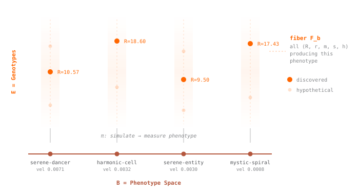
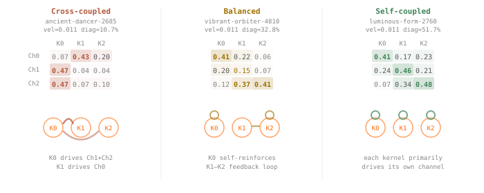

Fiber Theory
We would like to be able to point to a Lenia creature and recover the rules that make it, but measuring its shape leaves us with a surprisingly open problem, because rather different rules can produce bodies with much the same measured geometry. Gathering those rules into what mathematicians call a fiber gives us a way to study everything our description of the body has left undecided (which can be a great deal when we have reduced a moving creature to a few geometric properties). What interests us is whether watching that body develop, or seeing how it responds when disturbed, would let us distinguish these possibilities and get closer to the dynamics that actually sustain it.
Which rules could have made this form?
The set of compatible rules depends on what we observe and how we grow the body. Fixing the starting field and observation time gives one map from rules to forms, with a fiber containing all the rules that reach a particular measured outcome. With sampled data we allow a tolerance. The freedom inside that set could be useful: if several rules make the requested anatomy, we could choose among them for a second property, such as travelling or recovering after damage, without having to abandon the anatomy we wanted.

Which differences has the description hidden?
There is already a reason to take this freedom seriously. In the compiler study, rules for nearby measured forms were almost as far apart as shuffled rule pairs. In a separate initialization comparison, bulk shape was much more repeatable than movement. A geometric fiber may therefore contain differences that matter greatly to what a body can do. Measuring responses would let us subdivide it, asking which rules are interchangeable for one capacity and which only happen to produce similar proportions.
The main report works through these calculations for Flow Lenia, simulated tissue from EmbryoMaker, and anatomical landmarks from fish, all described by twelve common measurements. That lets us compare the geometry of their observed forms, while leaving open the question of whether any of the paths we can draw through the map correspond to something a developing body can actually do.

A round trip in the rules
One way to approach that question is to change the rule while a body develops, moving two parameters around a closed path and letting the state evolve at each step before carrying it into the next. By the time the parameters return to their starting values, the body has lived through a sequence of changes that returning the rule does not automatically undo. The appealing possibility is that a temporary excursion through the rules could leave us with a different body after the original rule is restored. We would then have a way to change what a system maintains without permanently changing the system’s rules, using the route itself as part of the construction. Holonomy gives us a geometric way to think about that possibility.
The complication is that the body would have evolved during this time anyway, so we compare the loop with a path that retraces its steps and repeat the calculation with finer subdivisions. Only one of five selected broad-corpus candidates passed both criteria in the denser calculation, while none of five from the separately selected region did. These are also paths we imposed in rule-parameter space, which means that even a convincing transport result would still need to be connected to the shape loops found by persistent homology. The recorded paths and controls show how much remains unresolved in that connection.

What can we change independently?
A Flow Lenia kernel reads density in a neighborhood and contributes a growth response, while the channel weights determine how these responses are combined. We can therefore change what a local interaction does or how it is coupled to the others, then follow which features of the body survive each change. We could then ask whether adjusting the channel weights compensates for a changed kernel well enough to preserve both the body and its response to a disturbance. If that compensation works, the fiber becomes a place to search for alternative implementations of an organization. We might replace local interactions while keeping a body’s capacity to move, recover, or reproduce, and use the substitutions that fail to discover which parts of its construction that capacity depends on.
